Создание игр в Roblox Studio
Создание квеста. Часть 1
Диалоговая система
В этом занятии мы приступим к созданию квеста, основываясь на диалоговой системе, созданной ранее. Метод создания квестов, используемый в этом и следующем занятиях, является облегчённой и упрощенной версией классического способа создания квестов в Roblox Studio.
Процесс будет разделён на два занятия. В первом мы создадим базовую часть: подготовим скрипты, создадим связанные с ними переменные, добавим квестовые предметы и разберёмся, как редактировать уже существующий диалог.
Подготовка диалога
Квест, который будет создан в этом занятии, будет достаточно простым: необходимо найти 5 квестовых объектов (в качестве примера будет использован алмаз) и принести их NPC.
Обычно Dialog добавляется в качестве дочернего объекта к голове NPC. Выберите вашего NPC, раскройте его группу в Explorer и найдите в частях тела голову.
Прежде чем приступать к написанию квеста, необходимо подготовить ранее созданный диалог, чтобы он подходил по смыслу. В деталях вашего NPC найдите компонент Head и отредактируйте ветку взятия квеста так, чтобы NPC говорил, что ему нужно собрать 5 квестовых предметов. После сообщения сути квеста, перед игроком должен встать выбор: взять квест или отказаться.
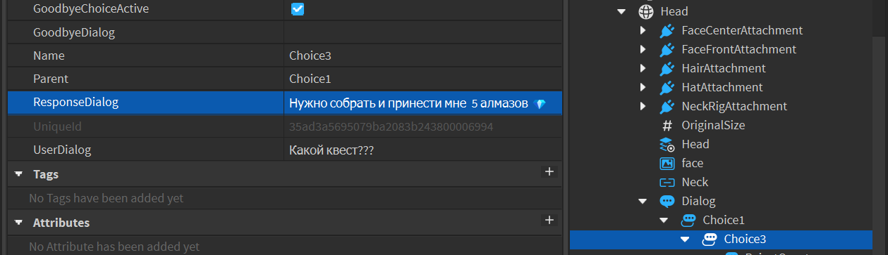Добавьте два дополнительных варианта ответа: TakeQuest И RejectQuest. Измените их параметры UserDialog И ResponseDialog на соответствующие фразы игрока и NPC:
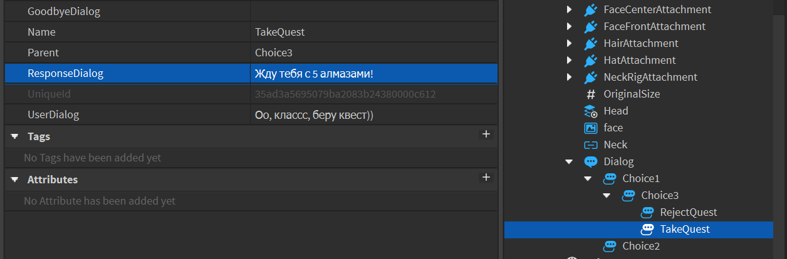Создание квестовых переменных
Несмотря на то, что квесты в играх - достаточно увлекательная и интересная часть геймплея, на самом деле с точки зрения программирования, это просто набор переменных и связанных с ними функций, запускающихся после активации квеста.
Любой квест состоит из трёх фаз: принятие квеста, его выполнение и получение награды. Эти фазы должны каким-то образом отслеживаться игрой - для этого создаются специальные переменные, которые хранят в себе информацию, связанную с квестом.
Для хранения этих переменных мы будем использовать рюкзак игрока - специальное место в структуре игры, в котором хранятся все объекты, принадлежащие отдельному игроку. Обычно рюкзак используется для хранения предметов, которые может использовать персонаж (оружие, надеваемая одежда, различные инструменты и т.д.). Однако, мы можем создать в нём скрытую папку, в которой будут храниться квестовые переменные.
В окне Explorer найдите сервис StarterPack - это хранилище вещей игрока. Все объекты, находящиеся в StarterPack, автоматически добавятся каждому игроку, вошедшему в игру.
Создайте подпапку Quest1 и добавьте в неё внешнюю переменную типа boolValue. Назовите её QuestTaken.
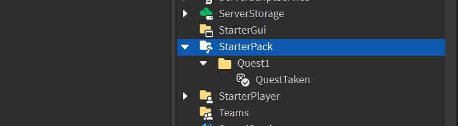Эта переменная будет отслеживать, согласился ли игрок на выполнение квеста или нет. Она должна изменить свое значение на true в тот момент, когда игрок выберет соответствующую опцию в диалоге (TakeQuest).
Изменение внешней переменной через скрипт
Чтобы включить переменную QuestTaken через диалог, необходимо отредактировать диалоговый скрипт.
В окне ToolBox необходимо найти диалоговый скрипт с названием Coddy_26_DialogScript и добавить его в папку StarterPlayerScripts, находящуюся в папке StarterPlayer.
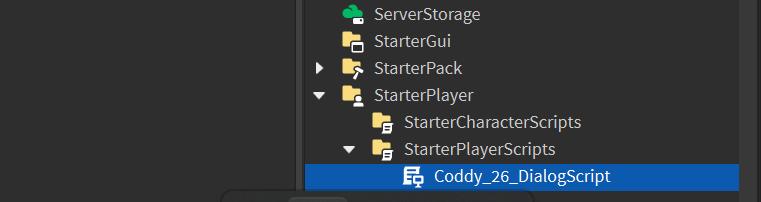Далее в сервис ReplicatedStorage добавьте удалённое событие RemoteEvent, переименуйте его на DialogueChosen:
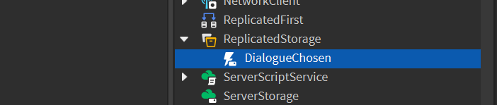В исходном диалоговом скрипте, который вы добавили из ToolBox, вместо Dummy нужно написать название вашего NPC, как оно записано в Explorer. Вместо Choice1, Choice2, Choice3 и Choice4 нужно вставить название вариантов ответа (DialogChoice), которые вы добавляли к диалогу.
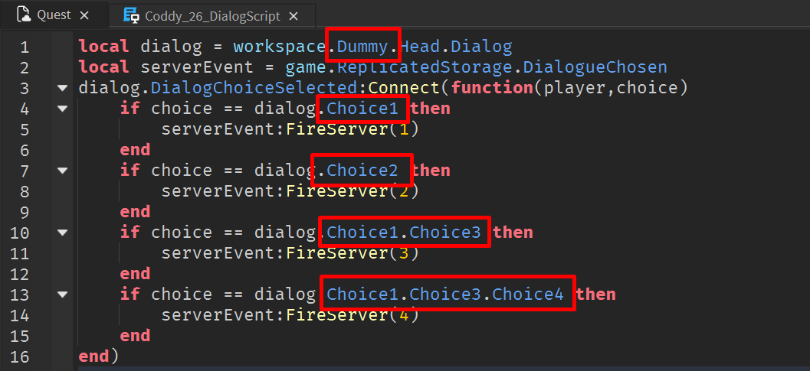Добавим ещё одну локальную переменную player, в которой хранится ссылка на локального игрока, чтобы исключить любые ситуации неопределенной работы кода. Локальный игрок - это игрок, на компьютере которого запущена игра. Также в первой строке добавим паузу при помощи функции wait(2), чтобы игрок успел прогрузиться.
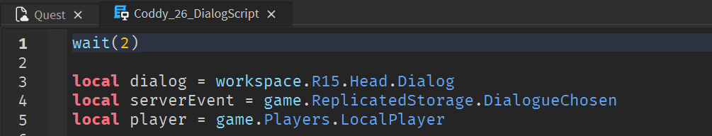Далее добавим команду для изменения значения переменной. Оно должно изменяться в том случае, если игрок выбрал вариант диалога TakeQuest. Добавьте отслеживание этой ветки диалога:
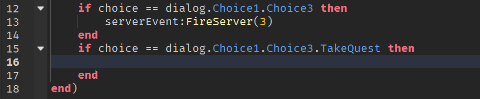Через ссылку на игрока получим доступ к его рюкзаку, а после найдём и изменим значение переменной:
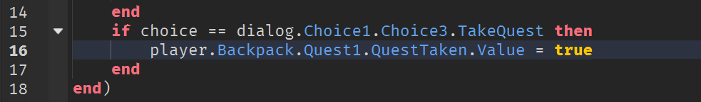Запустите игру, найдите переменную в рюкзаке игрока через сервис Players и через окно Properties проверьте её изменение при взятии квеста:
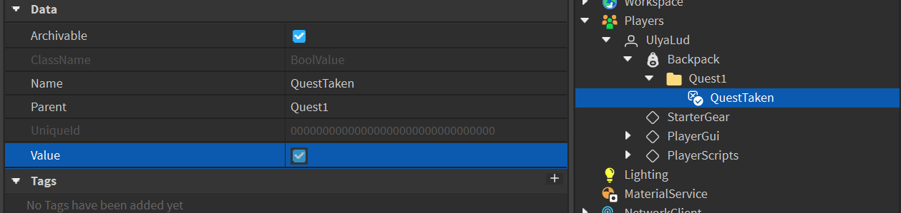Добавление квестового объекта
Следующий этап работы - добавление предмета, который нужно будет подобрать для выполнения квеста. Вы можете выбрать любой предмет, который нужно будет найти и подобрать, в качестве примера будет использоваться алмаз. Желательно найти в тулбоксе подходящую 3D-модель, не содержащую каких-либо скриптов и дополнительных компонентов. Если вы будете добавлять объект из раздела Models, очистите его от всего, кроме непосредственно самой 3D-модели.
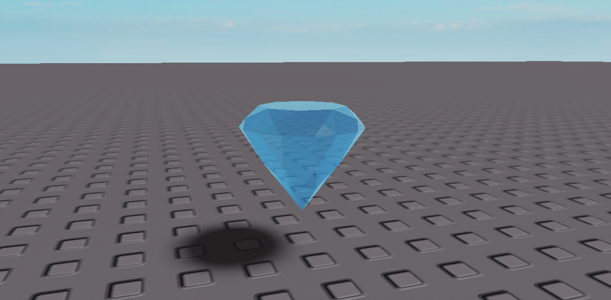Найдите в тулбоксе скрипт вращения из первого модуля Coddy_RotatePart и добавьте его к квестовому предмету.
Прежде чем переходить к написанию скрипта, добавьте дополнительную переменную типа intValue в рюкзак игрока и назовите её ItemsCollected. Она будет считать, сколько квестовых предметов вы собрали.
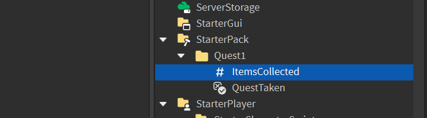Создайте дополнительный скрипт и назовите его PickUpScript.
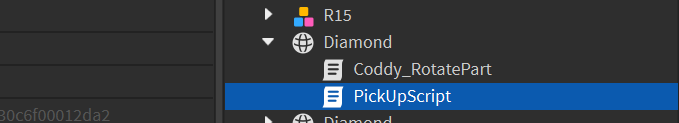Цель этого скрипта - отслеживать касания персонажей и увеличивать переменную ItemsCollected на единицу после подбора игроком. Напишите следующий код внутри созданного скрипта:
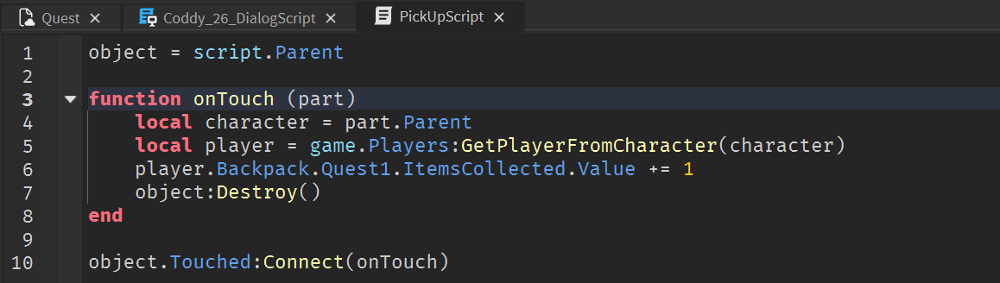В переменной object хранится обращение к родительскому элементу скрипта - то есть к квестовому предмету.
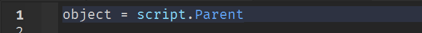После соприкосновении с игроком, скрипт обнаруживает часть, коснувшуюся квестового предмета, после чего находит его родительскую группу (персонажа) и записывает ее в переменную character.
Персонаж - это сущность, принадлежащая сервису Workspace, в то время как игрок и его переменная находятся в сервисе Players. Чтобы получить доступ к игроку, управляющему персонажем, используется специальный метод GetPlayerFromCharacter.
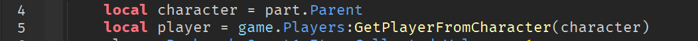После получения доступа к игроку, можно найти переменную-счётчик и увеличить её на единицу. После этого объект должен уничтожиться, чтобы избежать ложных срабатываний.
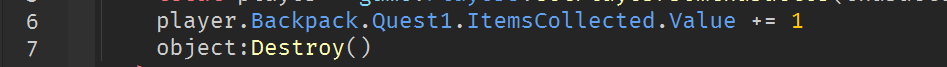Запустите игру, найдите переменную в рюкзаке игрока, подберите квестовый предмет и проверьте в окне Properties, увеличилось ли значение переменной ItemsCollected.
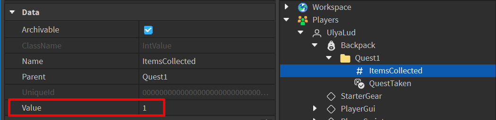Редактирование диалога через скрипт
После того, как игрок получил квест, NPC должен поменять свои реплики, так как игровая ситуация изменилась. Чтобы сделать это автоматически после того, как игрок согласится на выполнение квеста, нужно дописать соответствующие команды в диалоговый скрипт.
Создадим новую функцию ChangeDialog. Эта функция должна запуститься после выбора варианта ответа с согласием на квест и заменить нужные реплики.
Изменим открывающую реплику NPC. Вместо фразы о том, что у персонажа есть дело к игроку, NPC спросит, как продвигается квест. Для этого необходимо поменять параметр InitialPrompt y главного объекта Dialog.
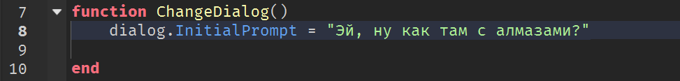Далее измените реплики игрока и ответы на них через параметры UserDialog и ResponseDialog соответствующих веток диалога.
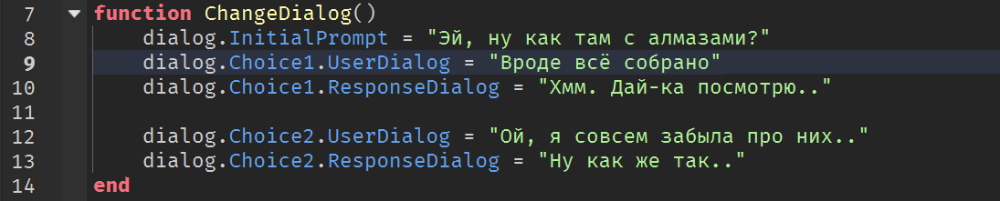Запустите игру, возьмите квест, после чего снова обратитесь к NPC. Если всё сделано правильно, вы увидите новые реплики.
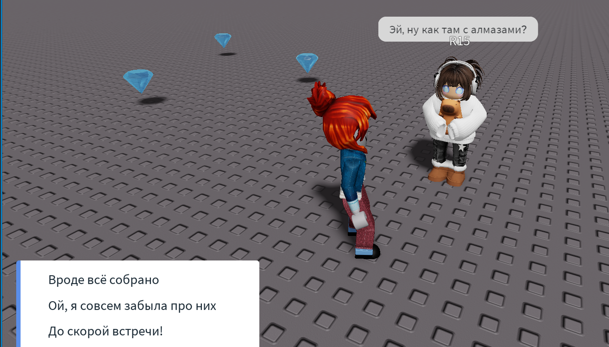После того, как игрок взял квест, в диалоге остаются ненужные ветки TakeQuest и RejectQuest. Добавьте команды для их удаления:
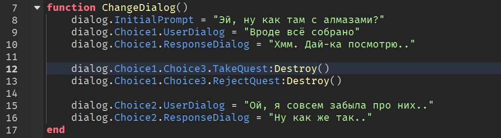Также добавим функцию AddBranch, автоматически добавляющую дополнительные варианты ответа в диалоговую систему:

В параметры этой функции передаются родительский объект (ветка, после выбора которой будет появляться этот вариант), реплика игрока и ответ NPC.
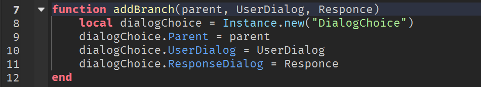Скрипт создает новый объект типа DialogueChoice, делает его дочерним к объекту, указанному в первом параметре, и изменяет параметры UserDialog И ResponseDialog.
Добавьте новую ветку диалога с поомщью созданной функции:
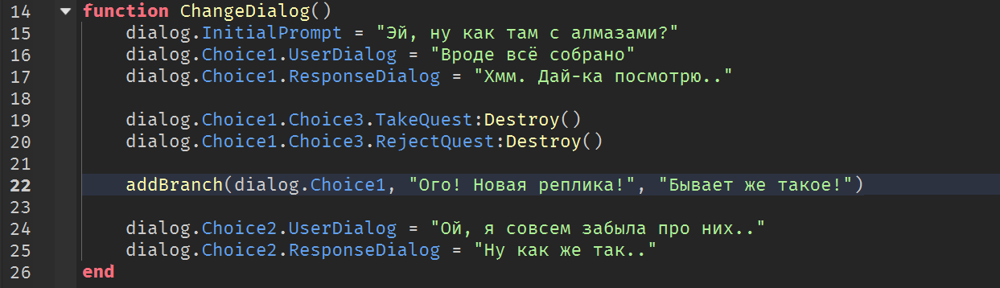Запустите игру и проверьте новую ветку диалога в работе:
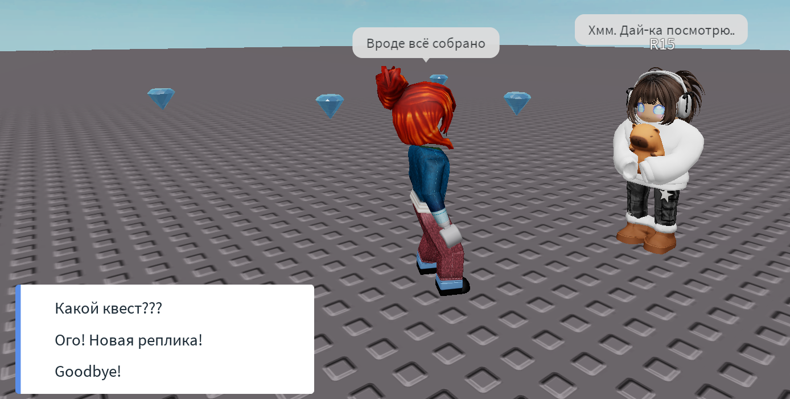Всё готово! Дополнительно можно доработать диалоговую систему и добавить дополнительные ветки, появляющиеся после взятия квеста.
Домашкаа 😁
На следующем занятии мы создадим награду, которую получит игрок за выполнение квеста.
- Вам необходимо на сайте Roblox во вкладке Marketplace выбрать предмет, который NPC выдаст игроку в качестве награды.
- Выберите, что этот предмет будет давать персонажу как магический артефакт: увеличение скорости, усиление прыжка, увеличение здоровья, ускорение регенерации или невидимость.
- Сохраните ID этого объекта или сфотографируйте название, чтобы можно было использовать его на следующем занятии.